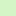

<!doctype html>
<html lang="en">
    <head>
        <meta charset="utf-8">
        <meta http-equiv="X-UA-Compatible" content="IE=edge">
        <meta name="viewport" content="initial-scale=1,user-scalable=no,maximum-scale=1,width=device-width">
        <meta name="mobile-web-app-capable" content="yes">
        <meta name="apple-mobile-web-app-capable" content="yes">
        <link rel="stylesheet" href="css/leaflet.css">
        <link rel="stylesheet" href="css/L.Control.Layers.Tree.css">
        <link rel="stylesheet" href="css/qgis2web.css">
        <link rel="stylesheet" href="css/fontawesome-all.min.css">
        <link rel="stylesheet" href="css/leaflet-measure.css">
        <style>
        html, body, #map {
            width: 100%;
            height: 100%;
            padding: 0;
            margin: 0;
        }
        </style>
        <title></title>
    </head>
    <body>
        <div id="map">
        </div>
        <script src="js/qgis2web_expressions.js"></script>
        <script src="js/leaflet.js"></script>
        <script src="js/L.Control.Layers.Tree.min.js"></script>
        <script src="js/leaflet.rotatedMarker.js"></script>
        <script src="js/leaflet.pattern.js"></script>
        <script src="js/leaflet-hash.js"></script>
        <script src="js/Autolinker.min.js"></script>
        <script src="js/rbush.min.js"></script>
        <script src="js/labelgun.min.js"></script>
        <script src="js/labels.js"></script>
        <script src="js/leaflet-measure.js"></script>
        <script src="data/Municipiosporpoblacinjornalera_1.js"></script>
        <script src="data/Entidades_2.js"></script>
        <script>
        var map = L.map('map', {
            zoomControl:true, maxZoom:28, minZoom:1
        }).fitBounds([[19.892914890907985,-114.53463656255302],[30.95662851253422,-90.43288396758858]]);
        var hash = new L.Hash(map);
        map.attributionControl.setPrefix('<a href="https://github.com/tomchadwin/qgis2web" target="_blank">qgis2web</a> &middot; <a href="https://leafletjs.com" title="A JS library for interactive maps">Leaflet</a> &middot; <a href="https://qgis.org">QGIS</a>');
        var autolinker = new Autolinker({truncate: {length: 30, location: 'smart'}});
        function removeEmptyRowsFromPopupContent(content, feature) {
         var tempDiv = document.createElement('div');
         tempDiv.innerHTML = content;
         var rows = tempDiv.querySelectorAll('tr');
         for (var i = 0; i < rows.length; i++) {
             var td = rows[i].querySelector('td.visible-with-data');
             var key = td ? td.id : '';
             if (td && td.classList.contains('visible-with-data') && feature.properties[key] == null) {
                 rows[i].parentNode.removeChild(rows[i]);
             }
         }
         return tempDiv.innerHTML;
        }
        document.querySelector(".leaflet-popup-pane").addEventListener("load", function(event) {
          var tagName = event.target.tagName,
            popup = map._popup;
          // Also check if flag is already set.
          if (tagName === "IMG" && popup && !popup._updated) {
            popup._updated = true; // Set flag to prevent looping.
            popup.update();
          }
        }, true);
        var measureControl = new L.Control.Measure({
            position: 'topleft',
            primaryLengthUnit: 'meters',
            secondaryLengthUnit: 'kilometers',
            primaryAreaUnit: 'sqmeters',
            secondaryAreaUnit: 'hectares'
        });
        measureControl.addTo(map);
        document.getElementsByClassName('leaflet-control-measure-toggle')[0]
        .innerHTML = '';
        document.getElementsByClassName('leaflet-control-measure-toggle')[0]
        .className += ' fas fa-ruler';
        var bounds_group = new L.featureGroup([]);
        function setBounds() {
        }
        map.createPane('pane_Positron_0');
        map.getPane('pane_Positron_0').style.zIndex = 400;
        var layer_Positron_0 = L.tileLayer('https://a.basemaps.cartocdn.com/light_all/{z}/{x}/{y}.png', {
            pane: 'pane_Positron_0',
            opacity: 1.0,
            attribution: '<a href="https://cartodb.com/basemaps/">Map tiles by CartoDB, under CC BY 3.0. Data by OpenStreetMap, under ODbL.</a>',
            minZoom: 1,
            maxZoom: 28,
            minNativeZoom: 0,
            maxNativeZoom: 20
        });
        layer_Positron_0;
        map.addLayer(layer_Positron_0);
        function pop_Municipiosporpoblacinjornalera_1(feature, layer) {
            var popupContent = '<table>\
                    <tr>\
                        <th scope="row">Total población jornalera</th>\
                        <td>' + (feature.properties['total2'] !== null ? autolinker.link(feature.properties['total2'].toLocaleString()) : '') + '</td>\
                    </tr>\
                    <tr>\
                        <th scope="row">Total hombres</th>\
                        <td>' + (feature.properties['hombres2'] !== null ? autolinker.link(feature.properties['hombres2'].toLocaleString()) : '') + '</td>\
                    </tr>\
                    <tr>\
                        <th scope="row">Total Mujeres</th>\
                        <td>' + (feature.properties['Mujeres2'] !== null ? autolinker.link(feature.properties['Mujeres2'].toLocaleString()) : '') + '</td>\
                    </tr>\
                    <tr>\
                        <th scope="row">%Hombres1</th>\
                        <td>' + (feature.properties['%Hombres1'] !== null ? autolinker.link(feature.properties['%Hombres1'].toLocaleString()) : '') + '</td>\
                    </tr>\
                    <tr>\
                        <th scope="row">%Mujeres1</th>\
                        <td>' + (feature.properties['%Mujeres1'] !== null ? autolinker.link(feature.properties['%Mujeres1'].toLocaleString()) : '') + '</td>\
                    </tr>\
                    <tr>\
                        <th scope="row">% población indígena</th>\
                        <td>' + (feature.properties['%indigena_'] !== null ? autolinker.link(feature.properties['%indigena_'].toLocaleString()) : '') + '</td>\
                    </tr>\
                    <tr>\
                        <th scope="row">Nombre Municipio</th>\
                        <td>' + (feature.properties['NomMun'] !== null ? autolinker.link(feature.properties['NomMun'].toLocaleString()) : '') + '</td>\
                    </tr>\
                    <tr>\
                        <th scope="row">EntidadNom</th>\
                        <td>' + (feature.properties['EntidadNom'] !== null ? autolinker.link(feature.properties['EntidadNom'].toLocaleString()) : '') + '</td>\
                    </tr>\
                </table>';
            layer.bindPopup(popupContent, {maxHeight: 400});
            var popup = layer.getPopup();
            var content = popup.getContent();
            var updatedContent = removeEmptyRowsFromPopupContent(content, feature);
            popup.setContent(updatedContent);
        }

        function style_Municipiosporpoblacinjornalera_1_0(feature) {
            if (feature.properties['total'] >= 51.000000 && feature.properties['total'] <= 605.600000 ) {
                return {
                pane: 'pane_Municipiosporpoblacinjornalera_1',
                opacity: 1,
                color: 'rgba(35,35,35,0.0)',
                dashArray: '',
                lineCap: 'butt',
                lineJoin: 'miter',
                weight: 1.0, 
                fill: true,
                fillOpacity: 1,
                fillColor: 'rgba(250,255,232,0.7)',
                interactive: true,
            }
            }
            if (feature.properties['total'] >= 605.600000 && feature.properties['total'] <= 1361.800000 ) {
                return {
                pane: 'pane_Municipiosporpoblacinjornalera_1',
                opacity: 1,
                color: 'rgba(35,35,35,0.0)',
                dashArray: '',
                lineCap: 'butt',
                lineJoin: 'miter',
                weight: 1.0, 
                fill: true,
                fillOpacity: 1,
                fillColor: 'rgba(212,247,201,0.7)',
                interactive: true,
            }
            }
            if (feature.properties['total'] >= 1361.800000 && feature.properties['total'] <= 2567.600000 ) {
                return {
                pane: 'pane_Municipiosporpoblacinjornalera_1',
                opacity: 1,
                color: 'rgba(35,35,35,0.0)',
                dashArray: '',
                lineCap: 'butt',
                lineJoin: 'miter',
                weight: 1.0, 
                fill: true,
                fillOpacity: 1,
                fillColor: 'rgba(95,244,177,0.7)',
                interactive: true,
            }
            }
            if (feature.properties['total'] >= 2567.600000 && feature.properties['total'] <= 6011.200000 ) {
                return {
                pane: 'pane_Municipiosporpoblacinjornalera_1',
                opacity: 1,
                color: 'rgba(35,35,35,0.0)',
                dashArray: '',
                lineCap: 'butt',
                lineJoin: 'miter',
                weight: 1.0, 
                fill: true,
                fillOpacity: 1,
                fillColor: 'rgba(0,168,171,0.7)',
                interactive: true,
            }
            }
            if (feature.properties['total'] >= 6011.200000 && feature.properties['total'] <= 38186.000000 ) {
                return {
                pane: 'pane_Municipiosporpoblacinjornalera_1',
                opacity: 1,
                color: 'rgba(35,35,35,0.0)',
                dashArray: '',
                lineCap: 'butt',
                lineJoin: 'miter',
                weight: 1.0, 
                fill: true,
                fillOpacity: 1,
                fillColor: 'rgba(0,59,60,0.7)',
                interactive: true,
            }
            }
        }
        map.createPane('pane_Municipiosporpoblacinjornalera_1');
        map.getPane('pane_Municipiosporpoblacinjornalera_1').style.zIndex = 401;
        map.getPane('pane_Municipiosporpoblacinjornalera_1').style['mix-blend-mode'] = 'normal';
        var layer_Municipiosporpoblacinjornalera_1 = new L.geoJson(json_Municipiosporpoblacinjornalera_1, {
            attribution: '',
            interactive: true,
            dataVar: 'json_Municipiosporpoblacinjornalera_1',
            layerName: 'layer_Municipiosporpoblacinjornalera_1',
            pane: 'pane_Municipiosporpoblacinjornalera_1',
            onEachFeature: pop_Municipiosporpoblacinjornalera_1,
            style: style_Municipiosporpoblacinjornalera_1_0,
        });
        bounds_group.addLayer(layer_Municipiosporpoblacinjornalera_1);
        map.addLayer(layer_Municipiosporpoblacinjornalera_1);
        function pop_Entidades_2(feature, layer) {
            var popupContent = '<table>\
                    <tr>\
                        <td colspan="2">' + (feature.properties['CVEGEO'] !== null ? autolinker.link(feature.properties['CVEGEO'].toLocaleString()) : '') + '</td>\
                    </tr>\
                    <tr>\
                        <td colspan="2">' + (feature.properties['CVE_ENT'] !== null ? autolinker.link(feature.properties['CVE_ENT'].toLocaleString()) : '') + '</td>\
                    </tr>\
                    <tr>\
                        <td colspan="2">' + (feature.properties['NOMGEO'] !== null ? autolinker.link(feature.properties['NOMGEO'].toLocaleString()) : '') + '</td>\
                    </tr>\
                    <tr>\
                        <td colspan="2">' + (feature.properties['area'] !== null ? autolinker.link(feature.properties['area'].toLocaleString()) : '') + '</td>\
                    </tr>\
                </table>';
            layer.bindPopup(popupContent, {maxHeight: 400});
            var popup = layer.getPopup();
            var content = popup.getContent();
            var updatedContent = removeEmptyRowsFromPopupContent(content, feature);
            popup.setContent(updatedContent);
        }

        function style_Entidades_2_0() {
            return {
                pane: 'pane_Entidades_2',
                opacity: 1,
                color: 'rgba(35,35,35,1.0)',
                dashArray: '',
                lineCap: 'butt',
                lineJoin: 'miter',
                weight: 2.0, 
                fill: true,
                fillOpacity: 1,
                fillColor: 'rgba(243,166,178,0.0)',
                interactive: false,
            }
        }
        map.createPane('pane_Entidades_2');
        map.getPane('pane_Entidades_2').style.zIndex = 402;
        map.getPane('pane_Entidades_2').style['mix-blend-mode'] = 'normal';
        var layer_Entidades_2 = new L.geoJson(json_Entidades_2, {
            attribution: '',
            interactive: false,
            dataVar: 'json_Entidades_2',
            layerName: 'layer_Entidades_2',
            pane: 'pane_Entidades_2',
            onEachFeature: pop_Entidades_2,
            style: style_Entidades_2_0,
        });
        bounds_group.addLayer(layer_Entidades_2);
        map.addLayer(layer_Entidades_2);
        var baseMaps = {};
        var overlaysTree = [
            {label: ' Entidades', layer: layer_Entidades_2},
            {label: 'Municipios por población jornalera<br /><table><tr><td style="text-align: center;"></td><td>51 - 606</td></tr><tr><td style="text-align: center;"></td><td>606 - 1362</td></tr><tr><td style="text-align: center;"></td><td>1362 - 2568</td></tr><tr><td style="text-align: center;"></td><td>2568 - 6011</td></tr><tr><td style="text-align: center;"></td><td>6011 - 38186</td></tr></table>', layer: layer_Municipiosporpoblacinjornalera_1},
            {label: "Positron", layer: layer_Positron_0},]
        var lay = L.control.layers.tree(null, overlaysTree,{
            //namedToggle: true,
            //selectorBack: false,
            //closedSymbol: '&#8862; &#x1f5c0;',
            //openedSymbol: '&#8863; &#x1f5c1;',
            //collapseAll: 'Collapse all',
            //expandAll: 'Expand all',
            collapsed: false, 
        });
        lay.addTo(map);
        setBounds();
        </script>
    </body>
</html>
